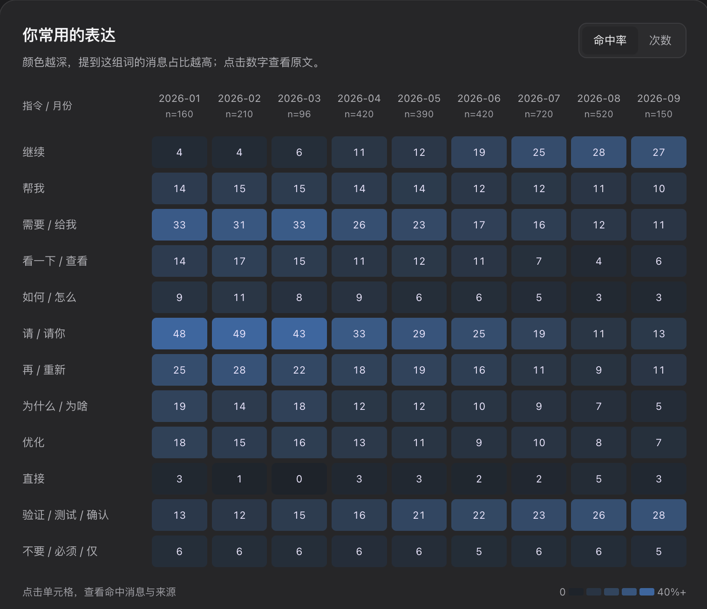
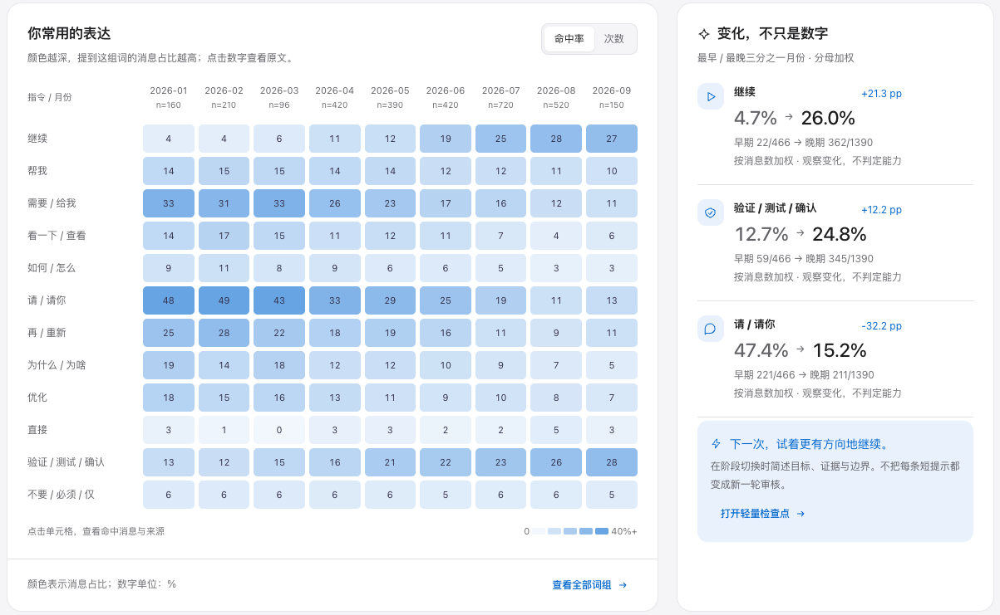
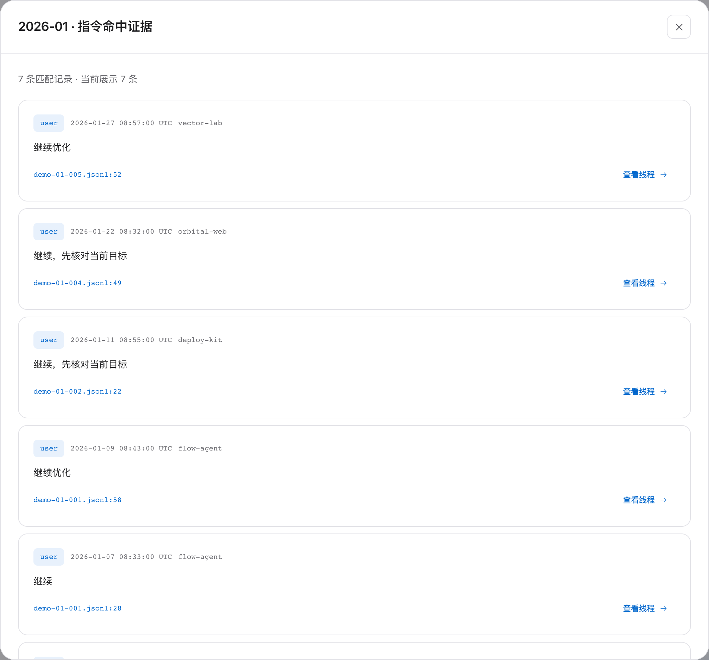
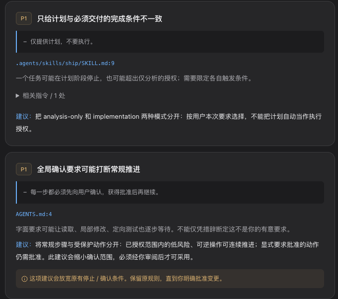
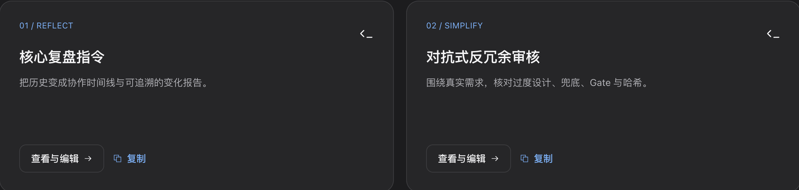

Codex Evolution
个人协作工作台 / v0.1.1
让经验，留给下一次任务。
看懂你的习惯。
积累协作的方法。
回看 Codex 对话，检查项目规则，
把有效的方法整理成提示词与 Skill 草稿。
本地优先证据可追溯MIT 开源
使用概览 · 真实界面 / 合成演示数据

回看 Codex 对话，检查项目规则，
把有效的方法整理成提示词与 Skill 草稿。

Explore your Codex history. Review project rules.
Turn recurring workflows into editable skill drafts.
用月度热力图回看常用表达，带着具体问题，再读一次原始对话。

把常用表达，放回时间中观察。
每一项占比，都有对应的数据范围。
带着线索，在上下文中理解含义。
点击热力图中的数字，查看命中消息、
来源文件与行号，再回到线程核对上下文。

检查重复要求、潜在冲突和模糊的停止条件。
引用原句，给出可供审阅的修改建议。

用提示词模板准备下一次任务；从重复对话流程中，提炼可编辑的 Skill 草稿。

回看对话 · 检查规则 · 复用方法
一个运行在本机的个人协作工作台。
A personal workspace for your Codex history,
project instructions, and reusable workflows.